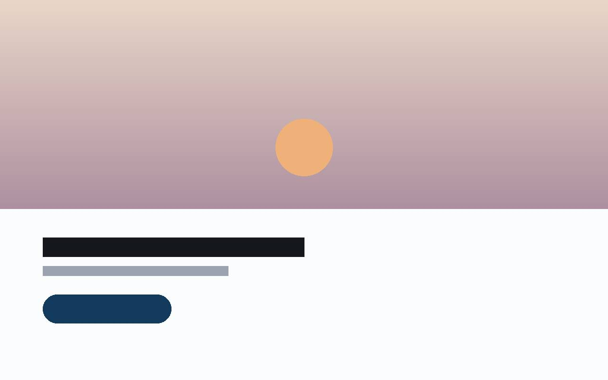
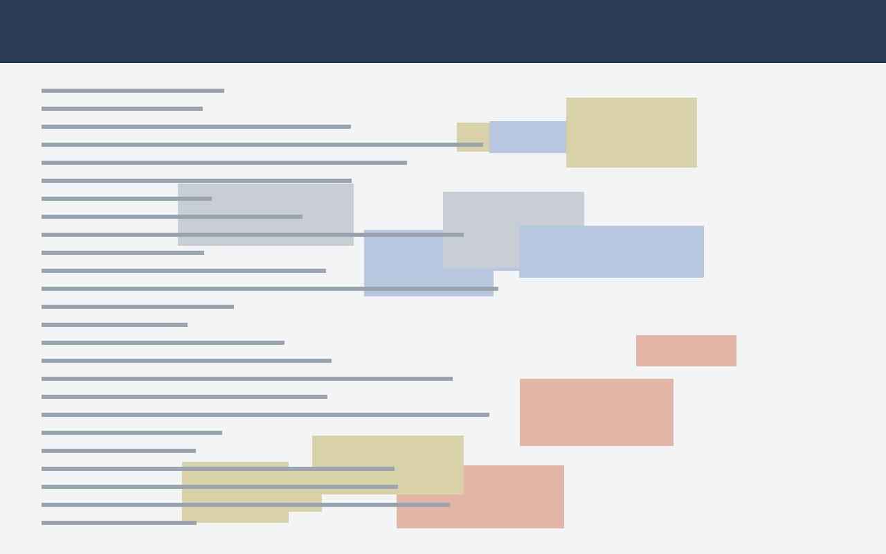
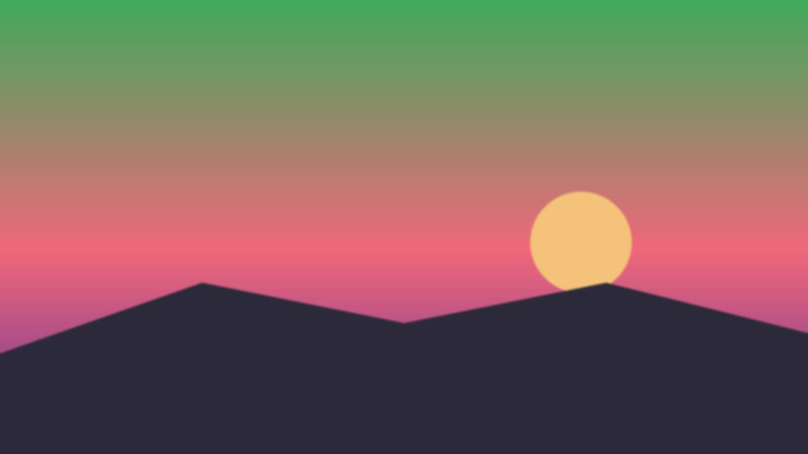

Nome dell’evento · Luogo · data
Il titolo dell’intervento e la seconda riga in corsivo
Nome Cognome · Hotel Digital Distribution
Scorri, oppure ↓ spazio
Prima parte
Il nome del capitolo. Cosa vedremo, in una frase.
Una riga che spiega perché questa parte conta per chi è in sala.
La domanda che fa l’ospite, scritta come la scriverebbe lui.
Sta scrivendo…
La risposta comincia così:
Ricostruzione Da dove vengono i dati, con la data.
Il concetto in una frase. La conseguenza, in corsivo.
Due o tre righe al massimo. Il resto si dice a voce.
un numero con il suo significato in parole.
Fonte del numero, con la data.
Cosa è successo
Un risultato. La seconda riga.
cosa misura il primo numero
cosa misura il secondo numero
Periodo, fonte e cosa non è ancora misurato.
Una frase sola, quella che vuoi che la sala si porti a casa.
- Primocosa succede
- Poicosa manca
- Risultatocosa si perde
Da dove arriva
Un dato a barre. Si legge da lontano.
Fonte e data.
Due modi a confronto. Uno lo decidi tu.
Come lavoriamo
Tre cose da guardare. In quest’ordine.
Uno
Il primo punto
Due righe che lo spiegano con un esempio vero.
Due
Il secondo punto
Due righe che lo spiegano con un esempio vero.
Tre
Il terzo punto
Due righe che lo spiegano con un esempio vero.
- Una garanzia
- Un’altra garanzia


Vero Quando sono state fatte le due catture. Trascina la linea per confrontarle.
Prima e dopo · Nome della struttura
Cosa non andava. Il dato che lo dimostra.
Azioni
Cinque cose da fare. La seconda riga.
- 1Una prova che si fa dal telefono.
- 2Una prova che si fa dal telefono.
- 3Una prova che si fa dal telefono.
- 4Una prova che si fa dal telefono.
- 5Una prova che si fa dal telefono.

La premessa, piccola.
La frase che emoziona.
Una riga sola, sotto.
Da dove viene la foto
Il metodo
Il titolo sui dati. La seconda riga.
Una riga su cosa guardiamo prima di fare qualsiasi cosa.
Didascalia del grafico.
Riepilogo
Il riassunto in una riga. E perché conta.
- PrimoUna riga.
- SecondoUna riga.
- TerzoUna riga.
- QuartoUna riga.
- QuintoUna riga.
L’attacco,
la frase che resta.
La chiusa.
Dopo l’intervento
L’invito alla sala. Parliamone.
Cosa può fare chi vuole approfondire, e dove trovarci.
Inquadra il codice. hoteldigitaldistribution.it/contatti
Hotel Digital Distribution · contatti
Grazie.
Nome Cognome · Hotel Digital Distribution
sito · email